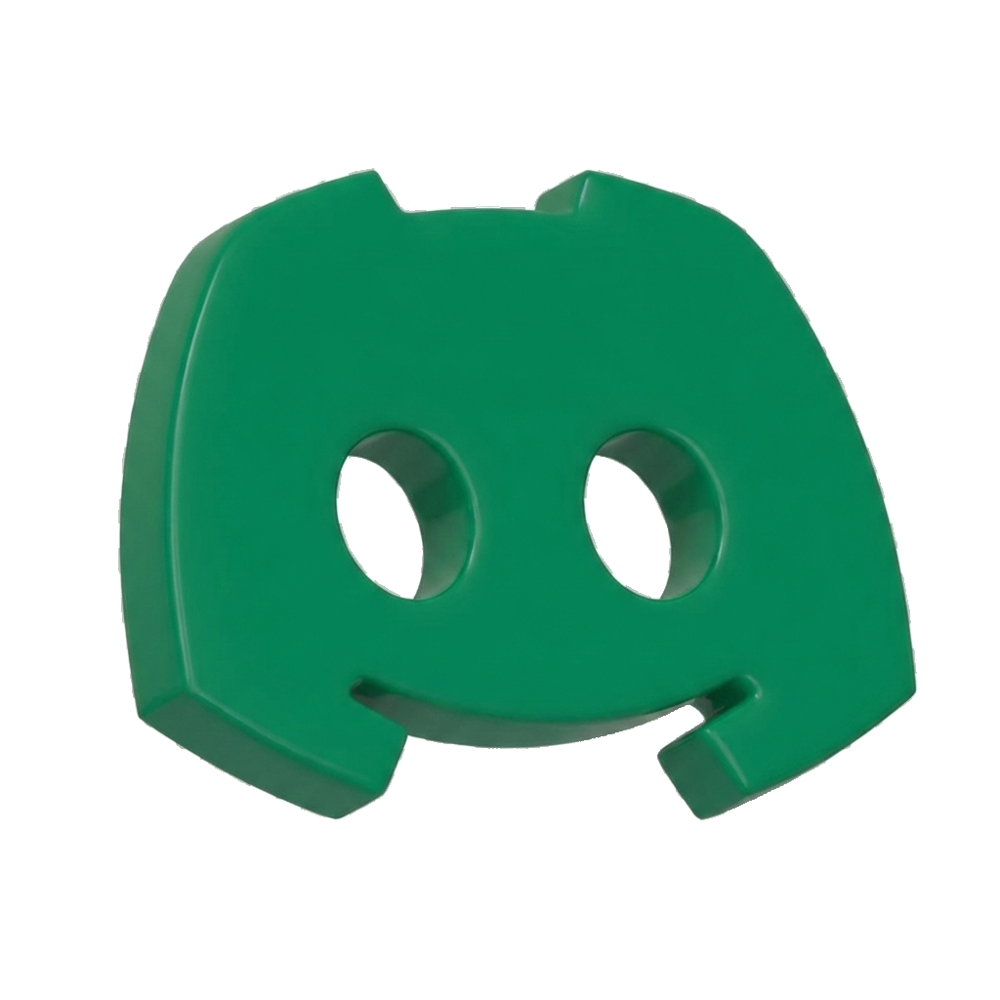

The interface between BIM data, Human Engineers, and AI Agents
InfoBIM IFC is a modular runtime environment for Engineering Automation designed to bridge the gap between static BIM data and dynamic AI agents.
“Engineers focus on what matters; the runtime handles the rest.”
InfoBIM is 'Agent-Friendly'. It provides a machine-readable catalog of tools, enabling LLMs to understand available functions and their parameters without hallucinations.
By wrapping codes in metadata, schema, and documentation, logic becomes discoverable and self-descriptive.
Key Insight: Agents do not 'guess' geometry or data; they call Capabilities that return precise results.
Automated logic checking.
InfoBIM turns descriptive reports into code. It exposes a machine-readable catalog of Capabilities that generate Markdown sections for each chapter of the technical narrative - directly from IFC models.
Instead of hand-writing memorials, agents orchestrate Capabilities for project identification, floor summaries, spaces, and systems. Each Capability has metadata, schema, and documentation, so the report structure is discoverable, traceable, and repeatable.
Agents do not write memorials from scratch; they call Capabilities that output verifiable Markdown blocks.
Use InfoBIM IFC at no cost: run it self-hosted or work with an implementor who manages infrastructure, DevOps and long-term support.
Share capabilities, experiments and real-world IFC automation recipes.
